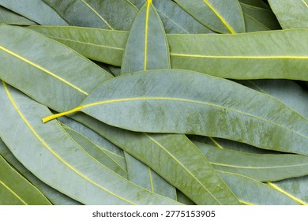
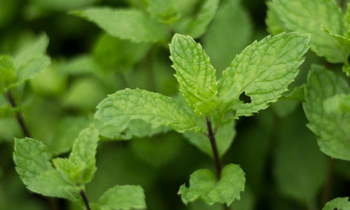
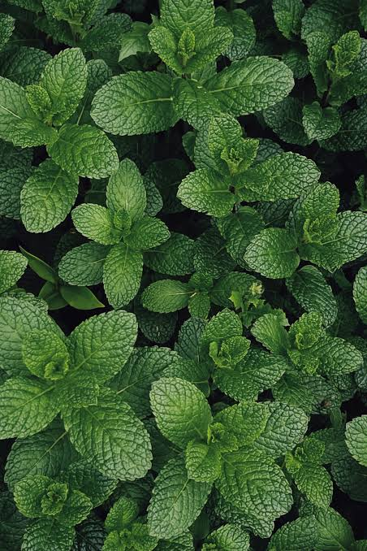
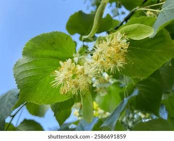

Plantas Medicinales
Conoce las propiedades y usos principales de cada planta:
1
Manzanilla
Uso principal:
- Alivia el estrés
- Mejora la digestión
- Reduce la inflamación
2

Eucalipto
Uso principal:
- Descongestionas las vías respiratorias
- Alivia la tos
- Tiene efecto antiséptico
3

Jengibre
Uso principal:
- Combate náuseas
- Fortalece el sistema inmunológico
- Alivia la inflamación
4

Menta
Uso principal:
- Alivia el dolor de estómago
- Combate la indigestión
- Refresca el aliento
5

Aloe Vera (Sábila)
Uso principal:
- Cicatriza heridas
- Hidrata la piel
- Alivia quemaduras
6
Romero
Uso principal:
- Mejora la memoria
- Estimula la circulación
- Alivia dolores musculares
7

Hierbabuena
Uso principal:
- Mejora la digestión
- Alivia gases
- Calma el malestar estomacal
8

Tila
Uso principal:
- Relaja el cuerpo
- Reduce la ansiedad
- Mejora el sueño
9
Hoja de Coca
Uso principal:
- Alivia el soroche (circulación)
- Mejora la concentración
- Ayuda en la digestión